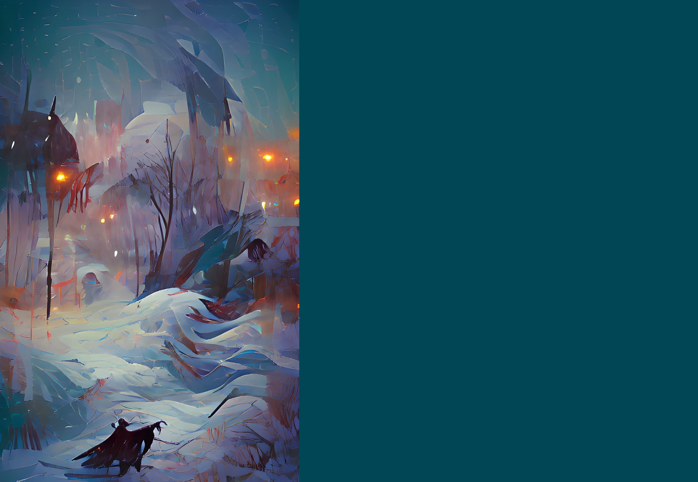

Lost Wandering In A Blizzard
The cold air from the north brings with it deadly tempests of snow and ice. The invaders have tried to settle within the lands of the blizzards, but few have actually managed to survive, let alone thrive.
SETUP:
Put 2 {presence} on your starting board in the highest numbered mountains.
Play Style:
Good add slowly destroying out {town}/{city} in its lands while trapping and killing the {explorer} that wander into its lands.